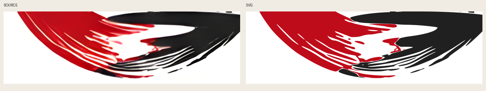
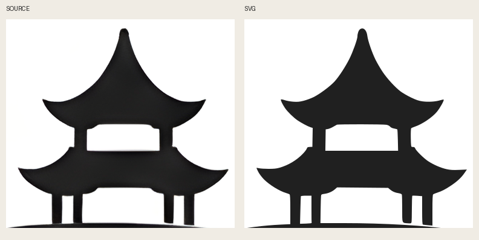
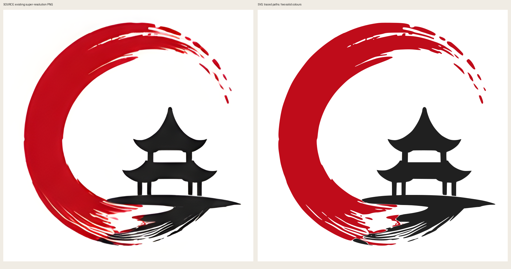

Aynı işaret.
Gerçek vektör yolları.
Son süper çözünürlük PNG'sinden kontur aktarımı. Gömülü bitmap ve tipografi yok; şeffaf zeminde düzenlenebilir SVG.
İnceleme adayı — onay bekliyor. Kilitli hedef değişmedi. Bu çıktı yeni kanonik logo değildir; PR merge/yayın izni ayrıca gerekir.


Fark: PNG'deki gölgeli tonlar iki düz renge indirildi. Kaynağın pigmentlerinden örnek alındı. En ince uçlarda küçük curve-fit farkları olabilir.
Alt fırça / kaynak ↔ SVG

Pagoda / kaynak ↔ SVG

Tam çözünürlük karşılaştırması

Hash'ler ve yöntem · Tarif ve sınırlar · Görsel inceleme notu